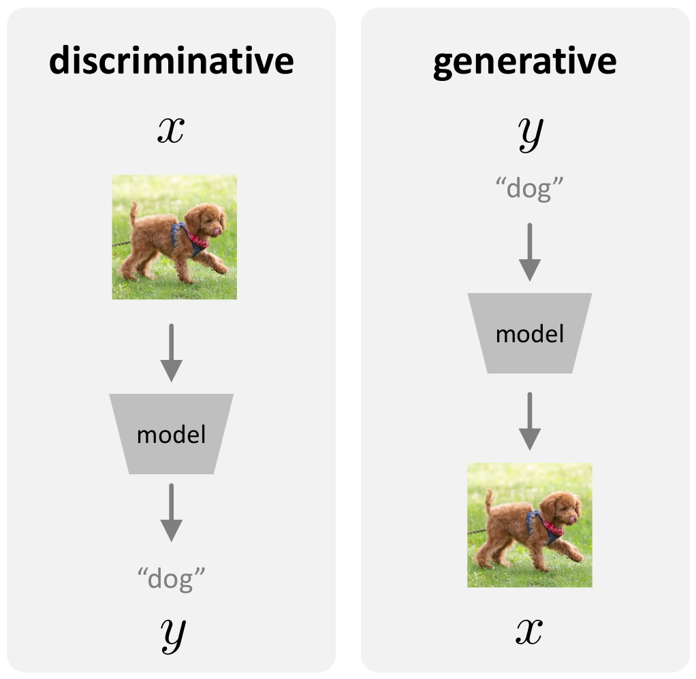
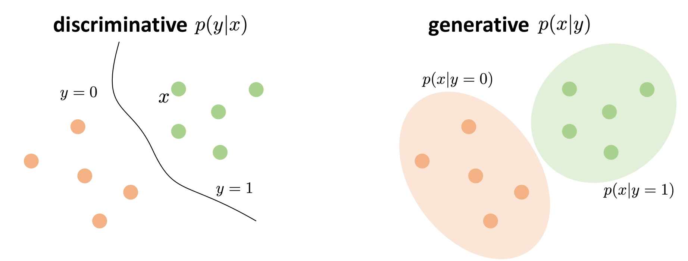
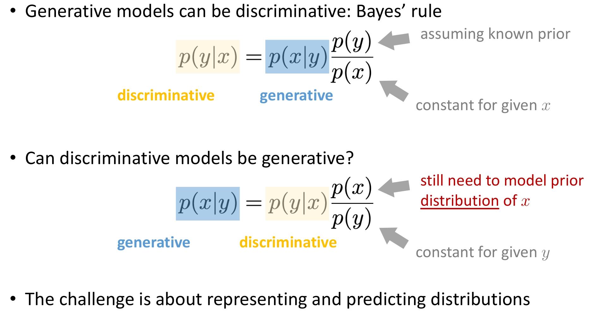
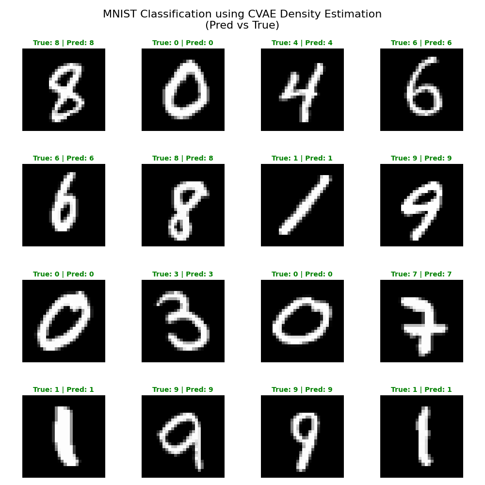

在机器学习中，我们通常将模型分为两类:生成模型 (Generative Model) 和 判别模型 (Discriminative Model)。
如图 1、图 2 所示:

图1 生成模型与判别模型的定义:判别模型输入样本 \(x\) 输出标签 \(y\)；生成模型输入标签 \(y\) 输出样本 \(x\)

图2 生成模型与判别模型的概率描述:\(P(Y|X)\) 与 \(P(X|Y)\) 的直观对比
答案:可以。 这正是本文的核心。利用 贝叶斯公式 (Bayes’ Rule)，我们可以将生成模型学到的 \(P(x|y)\) 转化为判别所需的 \(P(y|x)\):
\[ \underset{\text{判别}}{P(y|x)} = \underset{\text{生成}}{P(x|y)} \cdot \frac{\overset{\text{先验}}{P(y)}}{\underset{\text{常数}}{P(x)}} \]
因此，生成模型天生就可以用来做判别任务。
答案:通常很难。 让我们尝试反转贝叶斯公式:
\[ \underset{\text{生成}}{P(x|y)} = \underset{\text{判别}}{P(y|x)} \cdot \frac{\overset{\text{需建模分布}}{P(x)}}{\underset{\text{常数}}{P(y)}} \]
核心挑战: 无论是生成还是判别，核心挑战都在于如何表示和预测分布 (Representing and Predicting Distributions)。 * 判别模型预测标签的分布 \(P(Y|X)\)（通常很简单，是一个离散分布）。 * 生成模型预测数据的分布 \(P(X|Y)\)（通常很复杂，是高维空间中的连续分布）。
如图 3 所示:

图3 生成模型与判别模型的转换关系:贝叶斯公式连接 \(P(y|x)\) 与 \(P(x|y)\)
通过上述理论，我们可以利用 CVAE 的生成能力进行分类。
分类决策规则可以写为:
\[ \hat{y} = \arg\max_{y} P(y|x) = \arg\max_{y} \frac{P(x|y)P(y)}{P(x)} \]
忽略常数分母 \(P(x)\):
\[ \hat{y} = \arg\max_{y} \underbrace{P(x|y)}_{\text{CVAE Generation}} \cdot \underbrace{P(y)}_{\text{Class Prior}} \]
结论:如果我们能计算出图片 \(x\) 在每个类别 \(y\) 下的生成概率（似然度），我们就能分类！
注意:关于先验概率 \(P(y)\) 的说明
在上述公式中，我们似乎只关注了 \(P(x|y)\) 而忽略了 \(P(y)\)。 这是因为在 MNIST 等均衡数据集中，每个类别出现的概率是大致相等的（\(P(y=0) = P(y=1) = \cdots = P(y=9) \approx 0.1\)）。
当 \(P(y)\) 为常数时，\(\arg\max_y P(x|y)P(y)\) 等价于 \(\arg\max_y P(x|y)\)。
如果数据集类别不平衡（例如类别 A 占 90%，类别 B 占 10%），则必须显式地乘上先验概率 \(P(y)\)，否则模型会忽略类别分布的偏差。 在对数域计算时，公式变为:\(\text{Score}_y = \log P(x|y) + \log P(y)\)。
CVAE（条件变分自编码器）训练的目标是最大化对数似然的下界（ELBO）。这意味着 CVAE 本身就是一个密度估计器。
在 CVAE 中，条件 \(c\) 就是标签 \(y\)。我们需要计算 \(\log P(x|c)\)。
ELBO 只是下界，为了更精确地估计 \(\log P(x|c)\)，我们可以使用重要性采样（类似于 IWAE 的做法）:
\[ P(x|c) = \int P(x|z,c)P(z|c) dz = \mathbb{E}_{z \sim q(z|x,c)} \left[ \frac{P(x|z,c)P(z|c)}{q(z|x,c)} \right] \]
在对数域中计算（Log-Sum-Exp 技巧）:
\[ \log P(x|c) \approx \log \left( \frac{1}{K} \sum_{k=1}^K \frac{P(x|z_k,c)P(z_k|c)}{q(z_k|x,c)} \right) \]
其中 \(z_k\) 是从编码器 \(q(z|x,c)\) 中采样的 \(K\) 个样本。
我们在代码 cvae_estimate_prob_density.py 中正是使用了这种方法: 1. 对于一张未知的数字图片 \(x\)。 2. 假设它是 “0”，计算 Score_0 = \(\log P(x|c=0)\)。 3. 假设它是 “1”，计算 Score_1 = \(\log P(x|c=1)\)。 4. … 5. 选择 Score 最高的类别。
核心代码（cvae_estimate_prob_density.py）:
estimate_log_probability —— 用重要性采样估计 \(\log P(x|c)\):
def estimate_log_probability(model, x, c_label, n_samples=100):
"""log p(x|c) ≈ log(1/K * Σ [p(x|z,c)p(z)/q(z|x,c)])"""
model.eval()
with torch.no_grad():
# 编码 q(z|x,c)，采样 z ~ q(z|x,c) 共 K 次
mu_q, sigma_q = model.encoder(torch.cat((x, c), dim=1))
mu_q, sigma_q = mu_q.expand(n_samples, -1, -1), sigma_q.expand(n_samples, -1, -1)
epsilon = torch.randn_like(mu_q)
z = mu_q + epsilon * sigma_q
# log p(x|z,c) 解码器似然 | log p(z) 标准正态先验 | log q(z|x,c)
z_c = torch.cat((z, c.expand(n_samples, -1, -1)), dim=-1)
x_hat = model.decoder(z_c)
log_p_x_z = -torch.sum((x - x_hat) ** 2, dim=-1)
log_p_z = -0.5 * torch.sum(z ** 2, dim=-1)
log_q_z = -0.5 * torch.sum(2*torch.log(sigma_q) + epsilon**2, dim=-1)
log_w = log_p_x_z + log_p_z - log_q_z
return (torch.logsumexp(log_w, dim=0) - np.log(n_samples)).item()classify_sample —— 分类决策 \(\hat{y} = \arg\max_c \log P(x|c)\):
def classify_sample(model, x, num_classes):
log_probs = [estimate_log_probability(model, x, c) for c in range(num_classes)]
return np.argmax(log_probs)如图 4 所示:

图4 CVAE 密度估计分类 MNIST 结果:每张图显示真实标签与预测标签，绿色表示正确、红色表示错误
在我们的 MNIST 实验中，CVAE 作为分类器表现相当不错。
将 CVAE 用于分类，本质上是在做 假设检验: “假设它是类别 A，这个数据的出现概率是多少？假设它是类别 B，概率又是多少？”
这展示了生成模型最迷人的特性:它不仅仅是为了创造新的图片，更是为了理解数据的本质结构和分布。
推理 (Inference) 时，生成模型通常包含两类组件: * 采样器 (Sampler):用于生成新样本，如从 \(P(x|y)\) 中采样得到新的 \(x\)。 * 概率密度估计器 (Density Estimator)（可选）:用于计算某个样本 \(x\) 的概率密度，如在 VAE、Flow 等模型中估计 \(\log P(x|c)\)。
本文以 CVAE 为例，聚焦后者——如何用生成模型进行概率密度估计并用于分类。相关代码见 code/dl/ae/cvae/cvae_estimate_prob_density.py。